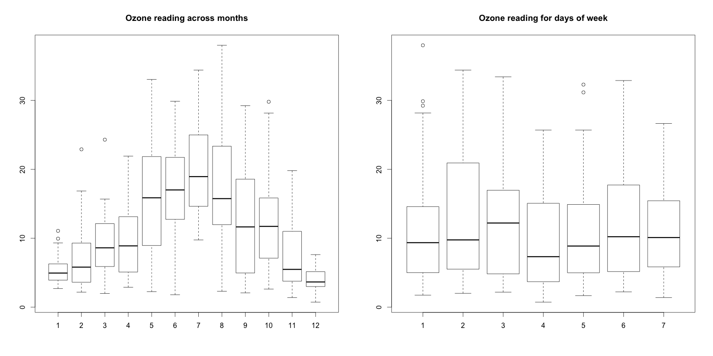
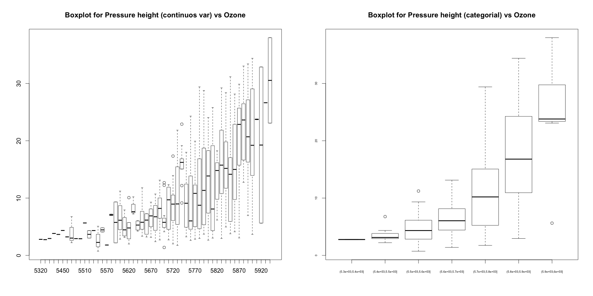
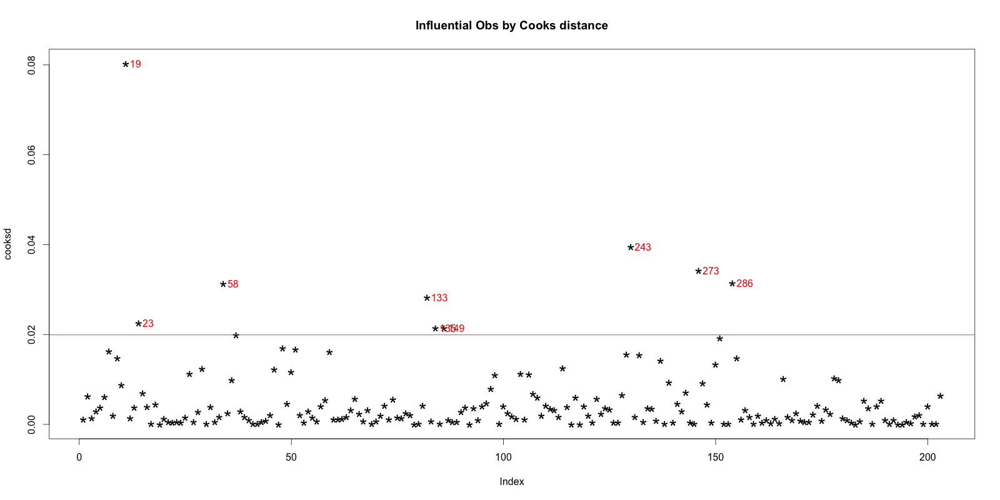

Outliers in data can distort predictions and affect the accuracy, if you don’t detect and handle them appropriately especially in regression models.
Treating or altering the outlier/extreme values in genuine observations is not a standard operating procedure. However, it is essential to understand their impact on your predictive models. It is left to the best judgement of the investigator to decide whether treating outliers is necessary and how to go about it.
So, why identifying the extreme values is important? Because, it can drastically bias/change the fit estimates and predictions. Let me illustrate this using the cars dataset.
To better understand the implications of outliers better, I am going to compare the fit of a simple linear regression model on cars dataset with and without outliers. In order to distinguish the effect clearly, I manually introduce extreme values to the original cars dataset. Then, I predict on both the datasets.
# Inject outliers into data.
cars1 <- cars[1:30, ] # original data
cars_outliers <- data.frame(speed=c(19,19,20,20,20), dist=c(190, 186, 210, 220, 218)) # introduce outliers.
cars2 <- rbind(cars1, cars_outliers) # data with outliers.# Plot of data with outliers.
par(mfrow=c(1, 2))
plot(cars2$speed, cars2$dist, xlim=c(0, 28), ylim=c(0, 230), main="With Outliers", xlab="speed", ylab="dist", pch="*", col="red", cex=2)
abline(lm(dist ~ speed, data=cars2), col="blue", lwd=3, lty=2)# Plot of original data without outliers. Note the change in slope (angle) of best fit line.
plot(cars1$speed, cars1$dist, xlim=c(0, 28), ylim=c(0, 230), main="Outliers removed \n A much better fit!", xlab="speed", ylab="dist", pch="*", col="red", cex=2)
abline(lm(dist ~ speed, data=cars1), col="blue", lwd=3, lty=2)
Notice the change in slope of the best fit line after removing the outliers. Had we used the outliers to train the model(left chart), our predictions would be exagerated (high error) for larger values of speed because of the larger slope.
For a given continuous variable, outliers are those observations that lie outside 1.5 * IQR, where IQR, the ‘Inter Quartile Range’ is the difference between 75th and 25th quartiles. Look at the points outside the whiskers in below box plot.
url <- "http://rstatistics.net/wp-content/uploads/2015/09/ozone.csv"
# alternate source: https://raw.githubusercontent.com/selva86/datasets/master/ozone.csv
inputData <- read.csv(url) # import data
outlier_values <- boxplot.stats(inputData$pressure_height)$out # outlier values.
boxplot(inputData$pressure_height, main="Pressure Height", boxwex=0.1)
mtext(paste("Outliers: ", paste(outlier_values, collapse=", ")), cex=0.6)Visualize in box-plot of the X and Y, for categorical X’s
url <- "http://rstatistics.net/wp-content/uploads/2015/09/ozone.csv"
ozone <- read.csv(url)# For categorical variable
boxplot(ozone_reading ~ Month, data=ozone, main="Ozone reading across months") # clear pattern is noticeable.
boxplot(ozone_reading ~ Day_of_week, data=ozone, main="Ozone reading for days of week") # this may not be significant, as day of week variable is a subset of the month var.
What is the inference? The change in the level of boxes suggests that Month seem to have an impact in ozone_reading while Day_of_week does not. Any outliers in respective categorical level show up as dots outside the whiskers of the boxplot.
# For continuous variable (convert to categorical if needed.)
boxplot(ozone_reading ~ pressure_height, data=ozone, main="Boxplot for Pressure height (continuos var) vs Ozone")
boxplot(ozone_reading ~ cut(pressure_height, pretty(inputData$pressure_height)), data=ozone, main="Boxplot for Pressure height (categorial) vs Ozone", cex.axis=0.5)
You can see few outliers in the box plot and how the ozone_reading increases with pressure_height. Thats clear.
Declaring an observation as an outlier based on a just one (rather unimportant) feature could lead to unrealistic inferences. When you have to decide if an individual entity (represented by row or observation) is an extreme value or not, it better to collectively consider the features (X’s) that matter. Enter Cook’s Distance.
Cook’s distance is a measure computed with respect to a given regression model and therefore is impacted only by the X variables included in the model. But, what does cook’s distance mean? It computes the influence exerted by each data point (row) on the predicted outcome.
The cook’s distance for each observation i measures the change in $\hat{Y}$ (fitted Y) for all observations with and without the presence of observation i, so we know how much the observation i impacted the fitted values. Mathematically, cook’s distance Di for observation i is computed as:
$$D{_i}=\frac{\sum_{j=1}^{n}\left( \hat{Y}_{j} - \hat{Y}_{j \left(i \right)} \right)^{2}}{p \times MSE}$$
where,
mod <- lm(ozone_reading ~ ., data=ozone)
cooksd <- cooks.distance(mod)In general use, those observations that have a cook’s distance greater than 4 times the mean may be classified as influential. This is not a hard boundary.
plot(cooksd, pch="*", cex=2, main="Influential Obs by Cooks distance") # plot cook's distance
abline(h = 4*mean(cooksd, na.rm=T), col="red") # add cutoff line
text(x=1:length(cooksd)+1, y=cooksd, labels=ifelse(cooksd>4*mean(cooksd, na.rm=T),names(cooksd),""), col="red") # add labels
Now lets find out the influential rows from the original data. If you extract and examine each influential row 1-by-1 (from below output), you will be able to reason out why that row turned out influential. It is likely that one of the X variables included in the model had extreme values.
influential <- as.numeric(names(cooksd)[(cooksd > 4*mean(cooksd, na.rm=T))]) # influential row numbers
head(ozone[influential, ]) # influential observations.
#> Month Day_of_month Day_of_week ozone_reading pressure_height Wind_speed Humidity
#> 19 1 19 1 4.07 5680 5 73
#> 23 1 23 5 4.90 5700 5 59
#> 58 2 27 5 22.89 5740 3 47
#> 133 5 12 3 33.04 5880 3 80
#> 135 5 14 5 31.15 5850 4 76
#> 149 5 28 5 4.82 5750 3 76
#> Temperature_Sandburg Temperature_ElMonte Inversion_base_height Pressure_gradient
#> 19 52 56.48 393 -68
#> 23 69 51.08 3044 18
#> 58 53 58.82 885 -4
#> 133 80 73.04 436 0
#> 135 78 71.24 1181 50
#> 149 65 51.08 3644 86
#> Inversion_temperature Visibility
#> 19 69.80 10
#> 23 52.88 150
#> 58 67.10 80
#> 133 86.36 40
#> 135 79.88 17
#> 149 59.36 70Lets examine the first 6 rows from above output to find out why these rows could be tagged as influential observations.
ozone_reading.Inversion_base_height.Pressure_gradient.The function outlierTest from car package gives the most extreme observation based on the given model. Here’s an example based on the mod linear model object we’d just created.
car::outlierTest(mod)
#> No Studentized residuals with Bonferonni p < 0.05
#> Largest |rstudent|:
#> rstudent unadjusted p-value Bonferonni p
#> 243 3.045756 0.0026525 0.53845This output suggests that observation in row 243 is most extreme.
The outliers package provides a number of useful functions to systematically extract outliers. Some of these are convenient and come handy, especially the outlier() and scores() functions.
outliers gets the extreme most observation from the mean. If you set the argument opposite=TRUE, it fetches from the other side.
set.seed(1234)
y=rnorm(100)
outlier(y)
#> [1] 2.548991
outlier(y,opposite=TRUE)
#> [1] -2.345698
dim(y) <- c(20,5) # convert it to a matrix
outlier(y)
#> [1] 2.415835 1.102298 1.647817 2.548991 2.121117
outlier(y,opposite=TRUE)
#> [1] -2.345698 -2.180040 -1.806031 -1.390701 -1.372302scoresThere are two aspects to the scores() function.
set.seed(1234)
x = rnorm(10)
scores(x) # z-scores => (x-mean)/sd
scores(x, type="chisq") # chi-sq scores => (x - mean(x))^2/var(x)
#> [1] 0.68458034 0.44007451 2.17210689 3.88421971 0.66539631 . . .
scores(x, type="t") # t scoresscores(x, type="chisq", prob=0.9) # beyond 90th %ile based on chi-sq
#> [1] FALSE FALSE FALSE TRUE FALSE FALSE FALSE FALSE FALSE FALSE
scores(x, type="chisq", prob=0.95) # beyond 95th %ile
scores(x, type="z", prob=0.95) # beyond 95th %ile based on z-scores
scores(x, type="t", prob=0.95) # beyond 95th %ile based on t-scoresOnce the outliers are identified and you have decided to make amends as per the nature of the problem, you may consider one of the following approaches.
Imputation with mean / median / mode. This method has been dealt with in detail in the discussion about treating missing values.
For missing values that lie outside the 1.5 * IQR limits, we could cap it by replacing those observations outside the lower limit with the value of 5th %ile and those that lie above the upper limit, with the value of 95th %ile. Below is a sample code that achieves this.
x <- ozone$pressure_height
qnt <- quantile(x, probs=c(.25, .75), na.rm = T)
caps <- quantile(x, probs=c(.05, .95), na.rm = T)
H <- 1.5 * IQR(x, na.rm = T)
x[x < (qnt[1] - H)] <- caps[1]
x[x > (qnt[2] + H)] <- caps[2]In yet another approach, the outliers can be replaced with missing values (NA) and then can be predicted by considering them as a response variable. We already discussed how to predict missing values.
Have a suggestion or found a bug? Notify here.
Editors Note: If you liked this article, you might want to check out, Introduction to R Programming video course if you are a beginner, new to the R programming language and the Mastering R programming video course for Data scientists and Machine learning engineers.